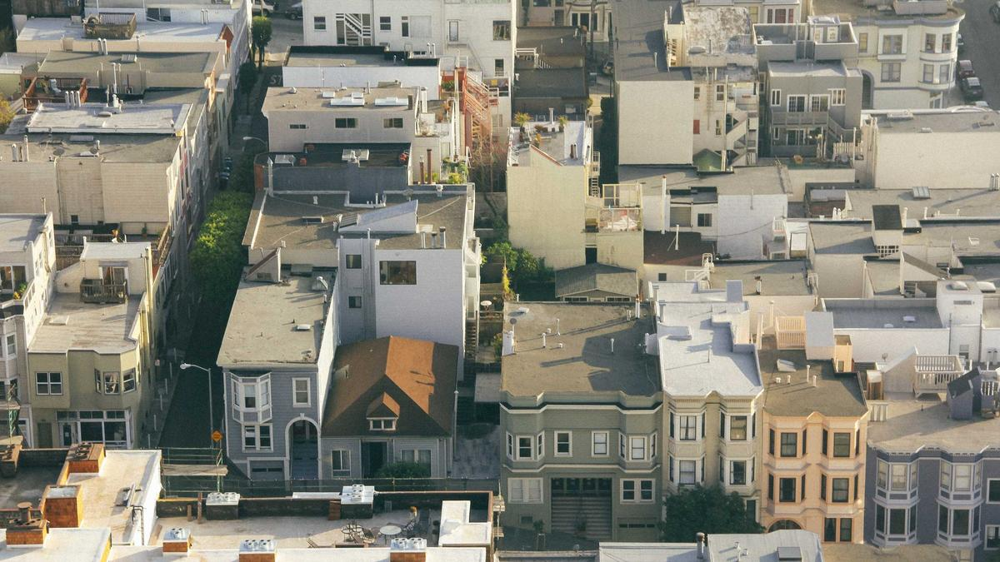
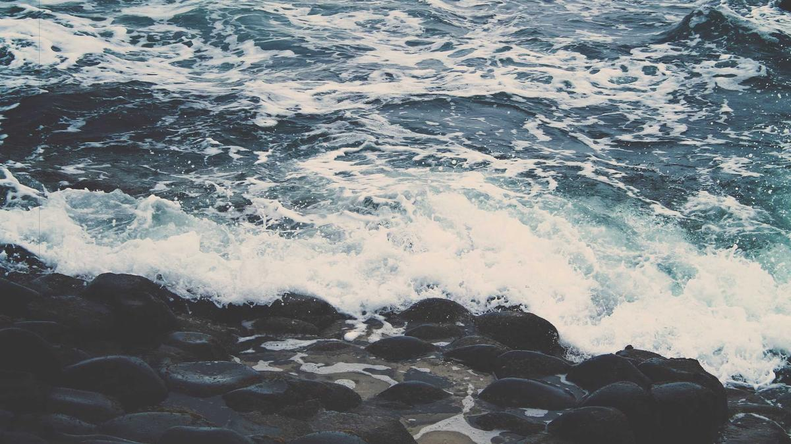
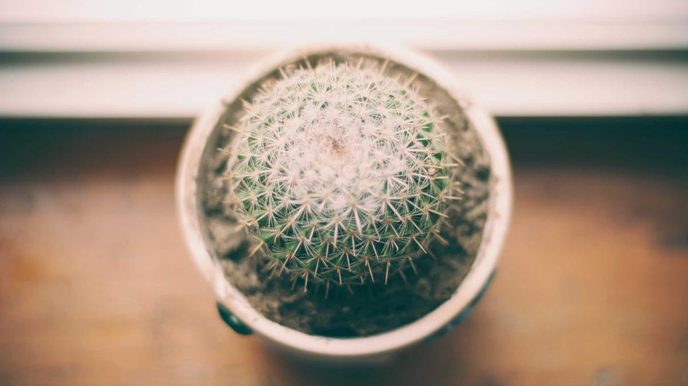
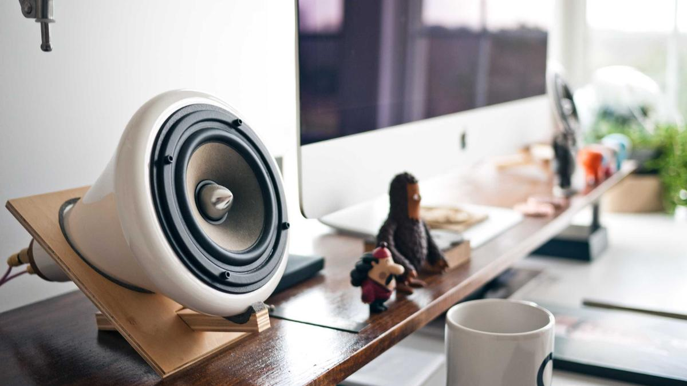
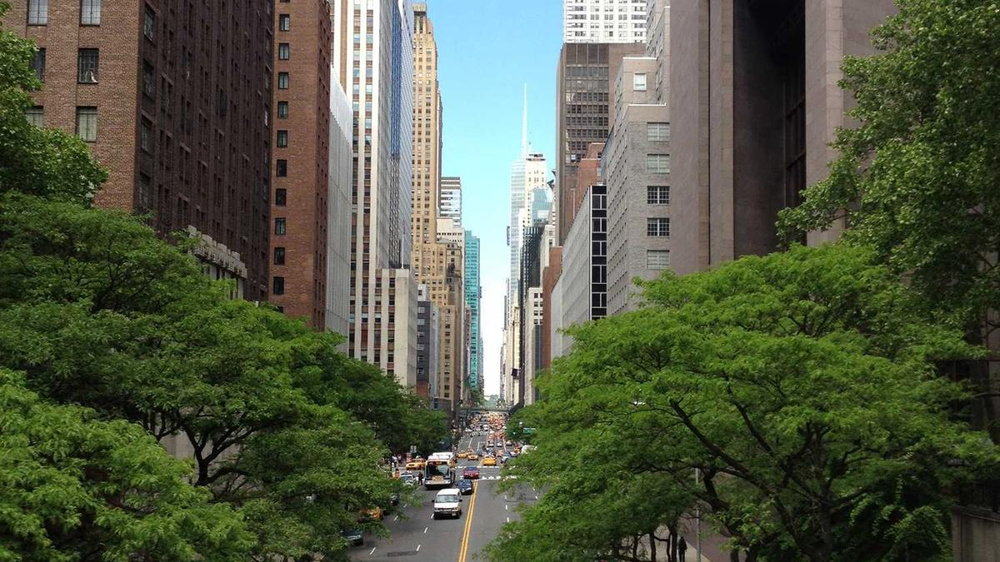
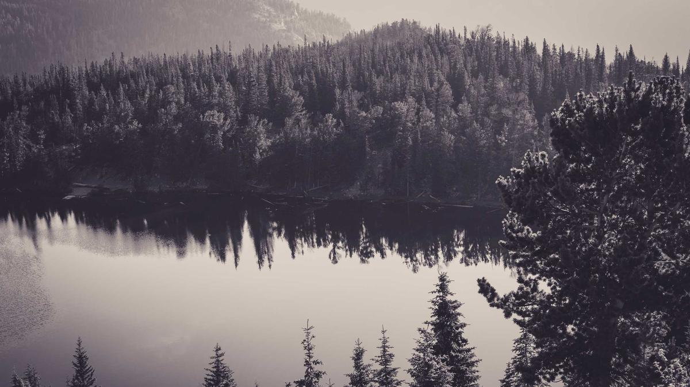

运动配套 · 全程度假不中断

🧺 自助洗衣
🎾 网球场
🏊 恒温泳池
贵阳 → 修文 → 安顺 → 六盘水 → 茅台 → 花溪

| 地点 | 酒店 | 晚 | 亮点 |
|---|---|---|---|
| 贵阳观山湖 | 中天凯悦 ★★★★★ | 2 | 环湖跑道 · 万象汇商圈 |
| 安顺 | 百灵希尔顿逸林 ★★★★★ | 2 | 虹山湖步道 · 温泉 |
| 六盘水 | 福朋喜来登 ★★★★★ | 3 | 瑶池彩虹跑道 · 19℃ |
| 茅台镇 | 希尔顿花园 ★★★★★ | 2 | 赤水河景 · 酱香下午茶 |
| 花溪 | 三亩七分·溪舍 🏡 | 2 | 十里河滩野奢独栋 |
| 贵阳收尾 | 五星过渡 | 1 | 整理行装 · 机场便利 |

恒温泳池 · 行政酒廊 · 步行 10 分钟到观山湖公园 5km 环湖跑道
穹岛天坑溶洞咖啡 · 刺梨拿铁 · 香火岩峡谷轻徒步 35m 瀑布 · 仅 ¥10 卫生费
青云路夜市丝娃娃 · 酸汤小吃 · 高端黔菜私厨酸汤鱼
虹山湖 4km 环湖步道 · 温泉泡池 · 顾府街夜市步行可达
7km 喀斯特环线 ¥10 · 600 年石板寨 · 布依八大碗 · 大圣之眼
夺夺粉 · 菌汤火锅 · 文庙古建 · 本地菜场采购菌子

恒温泳池 · 高空观景大堂 · 万达商圈 · 水城古镇夜市
彩虹步道环湖跑 · 登顶俯瞰全城 · 免费 · 山间茶室
溶洞溪流徒步 · 梅花山索道 · 乌蒙烤全羊 · 羽毛球局

赤水河景露台 · 酱香下午茶 · 滨河步道 · 推窗见酒厂建筑群
私人酒窖免费参观 · 老牌茶楼品酱香茶 · 1915 广场 · 彩虹桥
酒糟鸡 · 茅台回锅肉 · 河景私房菜 · 杨柳湾夜市 · 赤水河谷落日

十里河滩野奢独栋 · 山水环抱原木 · 私属健身房 · 管家私宴
青岩古镇轻逛 · 大兴国寺禅茶 · 夜郎谷石雕秘境 · 独立咖啡馆发呆
花溪牛肉宴 · 民宿烧烤趴 · 早市赶集 · 10km 河滩骑行跑步

文昌阁 · 甲秀楼免费打卡 · 电台街咖啡馆 · 省府路酸汤鱼聚餐
喷水池商圈 · 刺梨辣酱茶叶 · 生鲜菜场囤特产 · 民生路夜市收尾
观山湖告别晨跑 · 酒店早餐 · 龙洞堡机场还车 · 航班返京
| 项目 | 明细 | 金额 | 占比 |
|---|---|---|---|
| ✈️ 往返机票 | 北京↔贵阳 · ¥3,200/人 | ¥32,000 | 15% |
| 🚐 租车 | 2 台 9 座商务 ×13 天 + 油费过路 | ¥40,000 | 19% |
| 🏨 住宿 | 13 晚 · 5 间双人房 · 五星/野奢 | ¥65,800 | 32% |
| 🍽️ 餐饮 | 14 天正餐 + 夜市 + 下午茶 | ¥53,200 | 25% |
| 🎫 杂费 | 徒步费 · 场地 · 停车 · 伴手礼 | ¥18,000 | 9% |
| 10 人全程总计 | ¥209,000 | ||
| 地点 | 酒店 | 晚 | 5 间/晚 | 小计 |
|---|---|---|---|---|
| 观山湖 | 中天凯悦 | 2 | ¥5,800 | ¥11,600 |
| 安顺 | 希尔顿逸林 | 2 | ¥5,200 | ¥10,400 |
| 六盘水 | 福朋喜来登 | 3 | ¥5,000 | ¥15,000 |
| 茅台镇 | 希尔顿花园 | 2 | ¥5,400 | ¥10,800 |
| 花溪 | 溪舍野奢 | 2 | ¥6,200 | ¥12,400 |
| 贵阳收官 | 五星过渡 | 1 | ¥5,600 | ¥5,600 |
| 住宿合计 | ¥65,800 | |||
每个住宿点步行 10 分钟内有 4–10km 环湖 / 滨河跑道
全部酒店标配全配健身房 + 恒温泳池，野奢民宿私属健身房
每站车程 5–15 分钟专业球馆，提前 1 天预约团体场地
铜鼓荡 · 香火岩 · 明湖湿地 · 月照谷 — 全部免费或 ¥10
8 月贵阳 / 安顺 22–24℃，六盘水稳定 19℃，茅台河谷 26℃。仅备薄外套早晚徒步。
全程剔除黄果树、千户苗寨等高门票景区；全部免费或 ¥10–30 卫生费小众秘境。
每日行程安排本地大型生鲜菜场，采购山菌、土猪肉、鲜果，民宿可代加工。
优先本地老牌私房菜馆，拒绝景区高价团餐。夜市小吃穿插其中，灵活自由。
贵州高速桥隧多，山路弯急。2 台车配司机轮换，日开车不超过 3.5h。
提前下载贵州离线地图；部分小众点位信号弱；备现金 ¥200/人应急即可。
慢度假 · 不赶路 · 去感受路